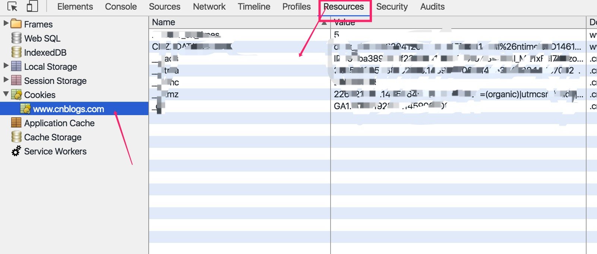

cookie
cookie的定义
cookie是前端开发中的一个重要概念。cookie翻译为“甜饼干”,由W3C提出被各大浏览器支持的一种解决HTTP请求无状态的方案。http的无状态是指客服端和服务端的数据交换完毕，连接一旦中断，再次建立连接时又是一个全新的连接，之前的连接的数据会被彻底“遗忘”，这就使服务端无法弄明白这次的连接是由谁发起的。
cookie的使用场景
当用户浏览网站需要对用户身份进行判断，来进行不同响应时，可以利用cookie。第一次发送请求判断校验了用户身份后，把用户身份存放在cookie中，当下次发送请求时服务端就可从cookie中获取之前存放在cookie中信息，而不用再次经过复杂校验。
或是用来保存一些用户在网页上自定义的一些设置，在页面跳转、页面关闭后依然能够记录这些信息。针对不同用户的不同操作做出相应的响应、
cookie的前端封装代码
1 | var cookie = { |
代码中封装了一个cookie对象，它包含2个方法set和get。
set可以设置cookie，其中包含3个参数，cookie的属性名，cookie的值，cookie的过期时间
get可以取出与输入属性名相同的cookie值
cookie的属性
- max-age(expires):指定cookie的有效期，单位是秒，表示cookie存在的秒数
- max-age为负:表示此cookie只在本窗口和子窗口有效
- max-age为0:表示删除此cookie
domain:可以访问该cookie的域名。如果设置为“.google.com”，则所有以“google.com”结尾的域名都可以访问该Cookie。注意第一个字符必须为“.”
path:可以访问该cookie的域名。如果设置为“/”，则该域名下的所有路径都可以访问该Cookie。注意最后一个字符必须为“/”
- 查看cookie的方法：

cookie存在的问题
- 存储大小只有4kb
- 每次发送http请求时cookie都会一并发送，浪费带宽
- HTML5的 localStorage和sessionStorage有了更好的解决办法